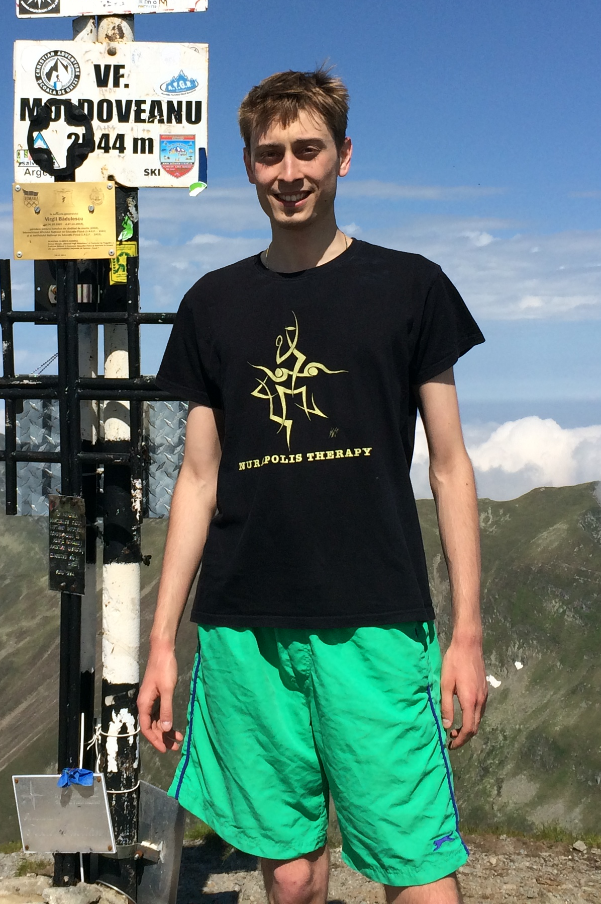

Razvan Valentin Marinescu
PhD student at University College London

Education: 2010-2014 Imperial College, London
Imperial MEng Thesis, 2014: "On a new
signature that quantifies topological structure in biological and economic
networks". Project source code and network data available
here :